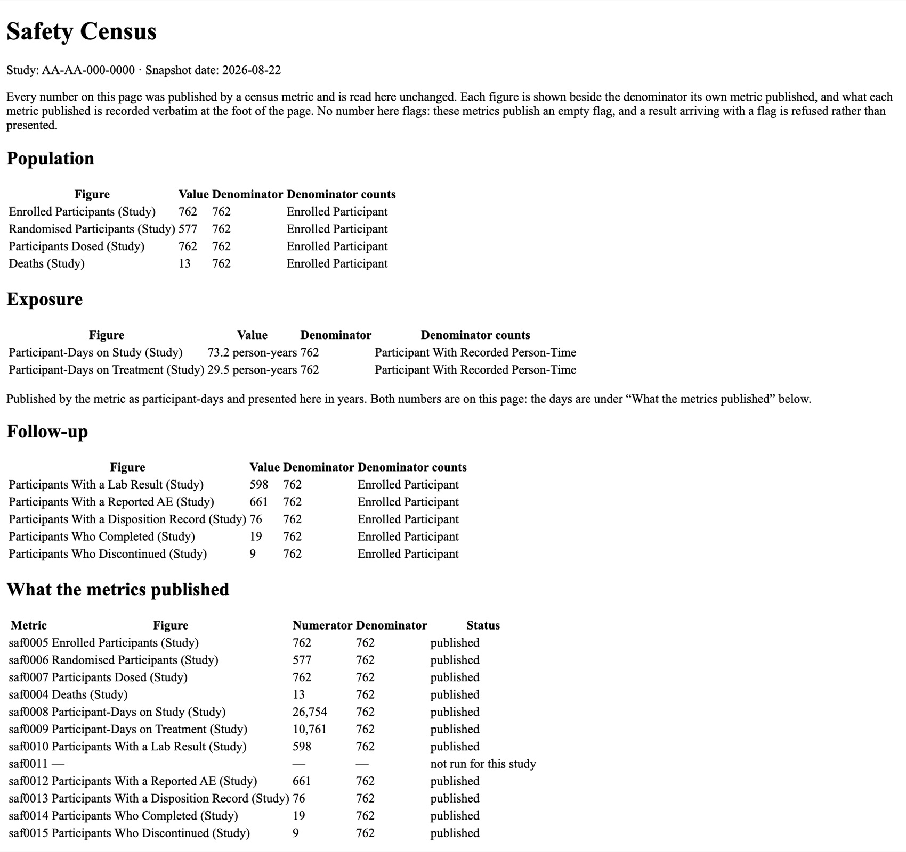

gsm.safety release review 2026-08-22
A safety overview leads with denominators — how many participants, how many dosed, how many died. gsm.safety computed those inside one function, from whatever columns it was handed, and got several of them wrong. This release replaces every one with a metric that publishes its own numerator, its own denominator and a record of where the figure came from. Both versions were run for this page on 2026-08-22, on the same study, in the same session.
deaths 4 → 13 of 762
5 published figures move
12 census metrics, each qualified twice
candidate gs#69, release/v1.3.0 → main
On the ecosystem's bundled study, the safety overview reported four deaths. Thirteen enrolled participants have a death recorded. The old count never opened the death domain at all: it matched the text of a discontinuation reason and counted whoever it found, enrolled or not.
| Where a death is recorded | Participants | Of them enrolled |
|---|---|---|
| The death domain | 12 | 10 |
| Discontinuation reason reads "Death" | 4 | 3 |
| Named by both | 0 | 0 |
| Union | 16 | 13 |
Three of the sixteen were never enrolled — S42425, S97688 and S78705 — and the metric anchors every figure to the enrolled population of 762, so the published number is 13. The old count did not anchor, which is why it reported all four of its matches including the one who was never enrolled.
The correction is four to thirteen, and it is stated that way deliberately
An earlier version of this work said the function reported one death, and that version circulated for about a day before being corrected. One is what it reported on gsm.core 1.2.0, where a single participant's discontinuation reason said Death. The bundled study moved between gsm.core versions under the same name: on 1.3.1 four participants carry that reason, and 762 are enrolled rather than 760.
So this is a threefold correction to a published clinical figure, not a thirteenfold one. The metric's own figure of 13 was re-measured on 1.3.1 and did not move.
The bundled study AA-AA-000-0000 | gsm.core 1.2.0 | gsm.core 1.3.1 |
|---|---|---|
| Participants in the subject domain | 1000 | 1000 |
| Enrolled | 760 | 762 |
| Discontinuation reason reads "Death" | 1 | 4 |
This is the trap the release exists to close, and it is also the reason this page was not built on the machine's own library: rendering the census here would have republished the superseded figures.
Both runs call SafetyCensus() on the same mapped domains from the same study, minutes apart: gsm.safety 1.2.0 first, then 1.3.0. Nothing below is copied from the release notes or the qualification records — those were read afterwards, to check this run against them.
| Figure on the safety overview | v1.2.0 | v1.3.0 | What the old number was doing |
|---|---|---|---|
| Enrolled participants | 762 | 762 | unchanged |
| Randomised to an arm | blank | 577 | read a treatment-arm column no standard domain carries |
| Received study drug | 744 | 762 | inferred dosing from time on treatment exceeding zero |
| Deaths | 4 | 13 | matched a discontinuation reason, never read the death domain |
| Person-years on study | 73.2 | 73.2 | unchanged |
| Person-years on treatment | 29.5 | 29.5 | unchanged |
| Participants with a lab result | 598 | 598 | unchanged |
| Participants with an ECG | blank, of 762 | absent, and it says so | published a blank where the domain is missing |
| Participants with a reported AE | 661 | 661 | unchanged |
| Participants with a disposition record | 100 | 76 | counted every identifier in the domain, enrolled or not |
| Completed | 22 | 19 | counted the same way, and inside a table rather than as a figure |
| Discontinued | 10 | 9 | counted the same way, and inside a table rather than as a figure |
| Median days on treatment | 15 | no longer published | wants an averaging step no metric performs yet |
| Ongoing / Not in the disposition domain | 64 / 662 | no longer published | read out of free text, and a subtraction |
Two figures left the page rather than moving, and they are named rather than dropped
Every figure that is published was measured twice, by routes that share no code, and the pair has to agree or the script exits non-zero. Run either yourself from the branch:
# the records read directly with base R, against the pipeline, figure by figure Rscript tools/qualify-census-metrics.R Rscript tools/qualify-death-count.R # AGREE - every figure measured twice, and saf0011 stops rather than publishing a zero. # AGREE - 13 participants, of 762 enrolled.
Both were run for this page and both agreed. Every row measured matches what inst/qualification/ records, including the eleven figures in the metrics record and all four counts in the death record.
One report, reading what the metrics published and computing nothing of its own. Rendered for this page by running the whole pipeline — the standard mapping, the eleven census metrics with a domain on this study, the reporting model, then the report workflow.

The page carries no flag column and no cut-point. These metrics declare no threshold and publish an empty flag, so a census figure cannot move a site's risk score — and a result arriving with a flag is refused rather than presented.
Why it matters
A figure that is wrong is now wrong in exactly one place. Before, the same count could be produced by a function and by a metric and the two could disagree without anything noticing. Now the function runs the metrics and reads what they published, so there is one counting lane and the page is a reader of it.
The test that proves it is not the one that checks the numbers. A structural check reads the function's body and every helper it calls, and fails if an arithmetic operator or an aggregating function appears in any of them. A rebuild that left the counting in place and put a workflow beside it would pass an arithmetic test by accident; it cannot pass that one.
Try it
saf0011 in the foot: it reads "not run for this study" rather than reporting a zero.A zero means measured and found none. A blank means the reader has to guess. Both were being published where the honest answer is that nothing was collected. Run for this page: the same call, the same study, with the death domain withheld.
# the death domain supplied Deaths 13 of 762 # the death domain withheld — the same call, everything else identical Deaths NA # and it says so, rather than leaving the reader to notice: Warning: No domain was supplied for Deaths (Study) (Mapped_Death); Participants With an ECG (Study) (Mapped_EG). Those figures are absent rather than zero.
Three states, kept apart, and checked in the strongest form available
On a study that maps no death domain, the death figure now reads as not collected instead of reading a discontinuation reason. That is correct, and it is also a visible change: the demo study's deaths and randomised tiles will read as not collected until its mapping phase adds those two domains.
What produced the numbers
release/v1.3.0 at 9f76d42, and gsm.safety 1.2.0 from release/v1.2.0 at 4a436ce for the before column.main branches into a scratch library, with gsm.reporting 1.1.5. Both main branches are byte-identical to their release tags, checked while writing this page, so this is what CI installs.Where this fits
This page is the review surface for gs#69, which promotes release/v1.3.0 to main and tags v1.3.0. gsm.safety is a clinical repo: nothing reaches main without your review.
It is the second of two candidates and contains the first, so gs#68 has to merge and be tagged before this one. Merging them the other way round swallows the widget release.
The rest of the candidate